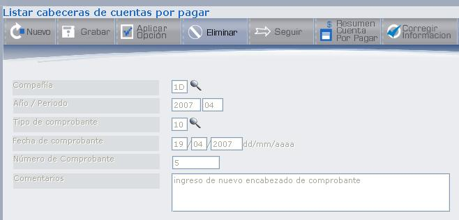

Ingreso Cuentas por Pagar
Mediante esta opción se podrá realizar todo el proceso de Cuentas por Pagar: selección del compromiso, registro del Comprobante de Cuentas por Pagar, la selección de la Partida, el registro de las cuentas de gasto y el registro de impuestos.
Al ingresar a esta opción se presenta la pantalla en el cual se listarán todos los Compromisos efectuados por Presupuesto que aún tengan saldo, como se muestra en la Figura 3.21.
Figura 3. Ingreso Cuentas por Pagar.
Aquí se puede ubicar a un Compromiso específico digitando el Año y el Número del Compromiso, una vez ingresados estos campos, presione el botón CONSULTAR o pulse la tecla ENTER. El compromiso que estaba buscando se ubicará al inicio de todos los registros.
BOTONES
Año: 2007, Número de compromiso a consultar se digita: 66 (flecha 1)
En el listado se despliega desde el número de compromiso que buscaba: 66 (flecha 2)
Figura 3. Consultar Número de Compromiso.
En la parte superior se despliega las opciones (1, 2 ó 3) que se pueden aplicar a los comprobantes en los casilleros que se encuentran al inicio de cada línea de registro. Las opciones son las siguientes:
- Digite “1”, si desea desplegar el detalle del Compromiso.
- Digite “2”, si desea consultar los obligados que tiene un Compromiso.
- Digite “3”, si desea ingresar el Registro de Cuentas por Pagar.
Cada opción se explicará por separado.
El detalle del compromiso, se muestra en la Figura 3.23.
Figura 3. Detalle de Compromiso.
Al dar clic sobre el vínculo Seleccione, se despliega la pantalla que muestra la Figura 3.24, en donde se presenta el detalle de la partida. Esta información es solo de consulta.
Presione el botón REGRESAR para volver a la pantalla del Listado de Compromisos.
Figura 3. Detalle de Partida.
Un Compromiso Obligado Ejecutado, se define como aquel Compromiso de Trámite que por alguna razón no seguirá el proceso normal de Ejecución Presupuestaria y por lo tanto al contabilizarlo se generará automáticamente el Obligado y ejecutado presupuestario. Este compromiso es únicamente de consulta.
Figura 3. Listar Obligado.
En la Figura 3.25, podemos observar un detalle de obligaciones en base a un compromiso seleccionado.
Al haber seleccionado esta opción y si no existen comprobantes registrados, la pantalla se presenta como muestra la Figura 3.26.
Figura 3. Listar Cabeceras de Cuentas por Pagar.
En esta pantalla podrá ingresar un nuevo comprobante empezando por el encabezado, para ello presione el botón NUEVO, que despliega la pantalla que muestra la Figura 3.27.
Figura 3. Registrar Cabecera de Comprobante de Cuentas por Pagar.
Los datos Compañía, Año/Periodo, Tipo de comprobante, Fecha de Comprobante, se despliegan automáticamente y podrán ser modificados. En los campos de selección primero deberá borrar esa información para después presionar el ícono ().
Cuando la información esté correcta presione el botón SEGUIR, se desplegará el número de comprobante y el campo “Comentarios”, en este último es obligatorio ingresar algún comentario con respecto al comprobante, los campos anteriores permanecen protegidos. A continuación presione nuevamente el botón SEGUIR o la tecla ENTER, para presentar la pantalla en la que debe ingresar o seleccionar el detalle del comprobante como se muestra en la Figura 3.33.
La Figura 3.28 presenta un ejemplo, en ella se han ingresado dos cabeceras de comprobantes de Cuentas por Pagar. Seleccione una cabecera para registrar el detalle del comprobante, si ese fuera el caso.
Figura 3. Listar Cabeceras de Cuentas por Pagar.
BOTONES
Cada cabecera del comprobante de Cuentas por Pagar que haya registrado presenta un casillero que permite digitar la opción que desee aplicar y son las siguientes:
- Digite “1”, si desea modificar o ingresar el detalle del comprobante de Cuentas por Pagar.
- Digite “2”, si desea eliminar el comprobante seleccionado.
- Digite “3”, si desea únicamente visualizar el cuadre del asiento.
- Digite “4”, si desea Contabilizar el asiento en Batch.
Digite la opción y presione el botón APLICAR OPCIÓN.
A continuación se explicarán las opciones 2, 3 y 4, para luego continuar con la opción 1.
Opción 2: Eliminar Comprobante de Cuentas por Pagar
Para eliminar comprobantes de cuentas por pagar, digite la opción 2, en el registro del comprobante que desea eliminar como se muestra en la Figura 3.29.
Figura 3. Listar Cabeceras de Cuentas por Pagar.
Una vez que haya digitado la opción 2 de Eliminar, se despliega el detalle del registro seleccionado con todos los campos protegidos, como muestra la Figura 3.30.

Figura 3. Eliminar comprobante de Cuenta por Pagar.
Al encontrarse en esta pantalla presione el botón ELIMINAR, se presenta un mensaje que ratifica la eliminación como se muestra en la Figura 3.31.
Figura 3. Mensaje de Eliminación de comprobante de Cuenta por Pagar.
Presione el botón ACEPTAR para eliminar el comprobante.
Opción 3: Visualizar (Detalle de la Cuenta por Pagar)
Permite visualizar el detalle de la Cuenta por Pagar, como se muestra en la Figura 3.32. La información que se presenta depende de lo que se haya registrado hasta el momento.
Figura 3. Visualizar Detalle de Cuentas por Pagar.
Opción 4: Contabilizar
Permite contabilizar los comprobantes de Cuentas por Pagar, el detalle de la contabilización se explica más adelante, después de haber ingresado las cuentas de gastos y los impuestos.
Created with the Personal Edition of HelpNDoc: Easy EBook and documentation generator